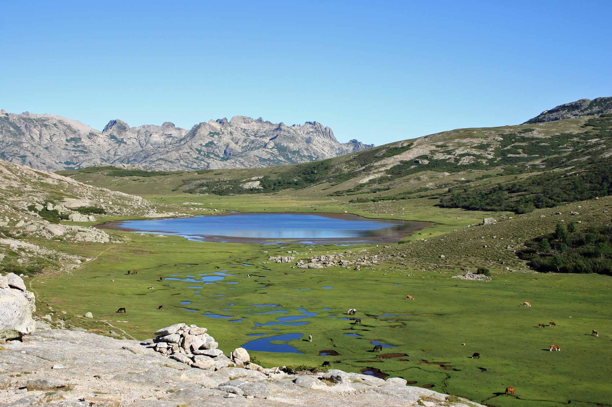
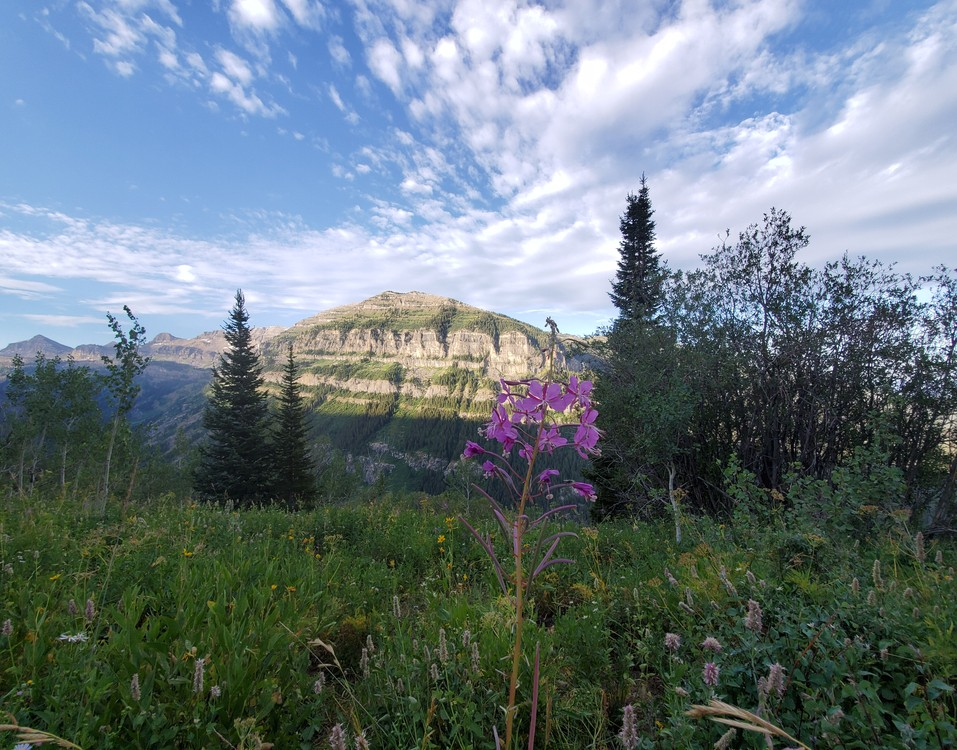
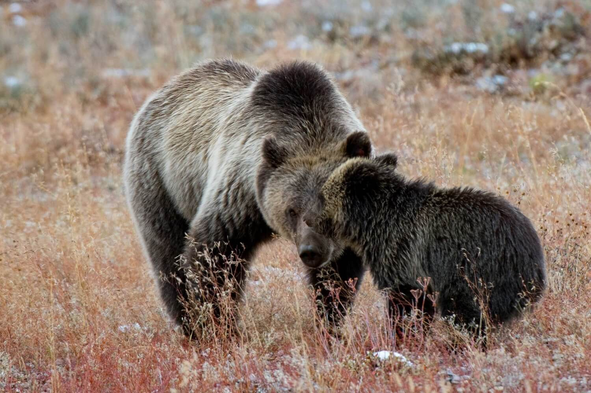

☰
Death Canyon Trailhead
Jenny Lake Trailhead
Inspiration's Point
Laurance S. Rockefeller Preserve Trailhead
Granite Canoyon Trailhead
More Info

Day Hikes
Marion Lake
12 Hours
18.5 Miles (29.7 km)
Strenuous
Top of the Tram
10 Hours
11.7 Miles (18.8 km)

